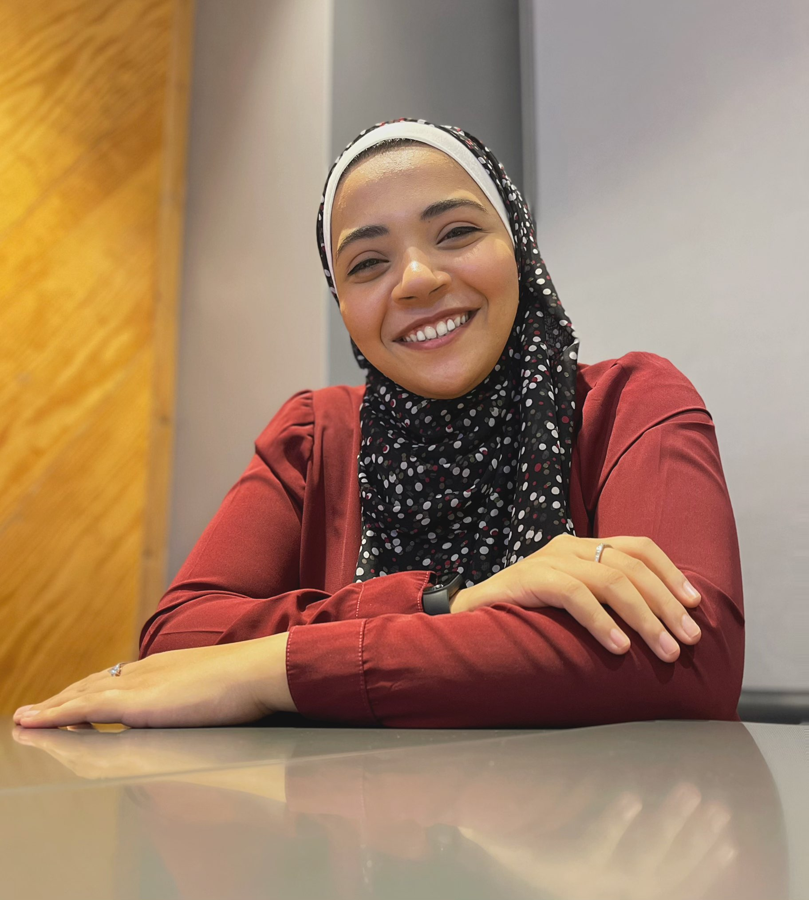

Aya Mostafa

Summary
I am a person who loves learning new things, is always looking for his passion and work hard to achieve his goals.
I always seek a better future for myself professionally and mentally.
Education
- Bachelor's degree in Urban design and Planning - Ain Shams University (2015-2021)
Work Experience
Junior Graphic Designer - Papa Johns' Egypt.
March 2022 - June 2023
- Designed social media related designs.
- Designed Flyers, menu and dining-in menus.
- Designed window stickers and roll-ups for branches.
- Designed HR related designs: Certificates of appreciation, Employee of the month,..
Junior Graphic Designer - Arby's Egypt.
March 2022 - June 2023
- Designed social media related designs.
- Designed Flyers, menu and dining-in menus.
- Designed window stickers and roll-ups for branches.
- Designed HR related designs: Certificates of appreciation, Employee of the month,..
Junior Graphic Designer - Vantage Egypt for tourism and entertainment.
March 2022 - June 2023
- Designed for the company's dranchises (Papa Johns', Arby's, and Max Burgers Egypt.)
Skills
Technical skills
- Figma: ★★★★★
- Adobe Photoshop: ★★★★★
- Adobe Illustrator: ★★★
- Adobe Indesign: ★★★
- Autodesk Autocad: ★★★★★
- Autodesk 3ds Max: ★★★★
- Lumion: ★★★★
- Vray: ★★★
- Microsoft Office Suite: ★★★★
Soft skills
- Fast-learning: ★★★★★
- Teamwork: ★★★★★
- Adaptability: ★★★★★
- Attention to details: ★★★★★
- Time management: ★★★★★
- Organization: ★★★★★
- Work ethic: ★★★★★
- Communication: ★★★★★
Courses and Certificates
3Ds max & Vray architectural course.
Ebda3 Academy - 2020The Complete web & mobile designer in 2023 : UI/UX.
Zero to mastery academy (Aug 2023 | Oct 2023)The Complete web development Bootcamp.
Udemy - Dr. Angela YU (Oct 2023 | Present)Google UX design certificate
Coursera - Google (Sep 2023 | present)
Other